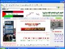

تحيي الجماهير العربية في الداخل الفلسطيني اليوم الجمعة الذكرى الرابعة لهبة اكتوبر وانتفاضة الاقصى في ظل اجواء من العنصرية المهووسة ضد كل ناطق بالضاد في هذه الديار. لجنة المتابعة العليا, وبعد نقاش طويل ومستفيض, اتسم احيانا بالحدة نتيجة للاختلاف في الاجتهادات ووجهات (...)
وضعت الحكومة الإسرائيلية على طاولة البرلمان مذكرة اقتراح قانون من الحكومة عنوانه: "قانون تطبيق برنامج الانفصال من العام 2004". يتألف القانون من 138 بنداً ويمتد مع ملاحقه وتفسيراته على 89 صفحة. تتناول غالبية مواد القانون قضايا إجرائية متعلقة بحقوق التعويض وتعريف أصحاب الحق (...)
ربّما تختصر هذه الصفة بعض ما يتمتع به هذا المناضل المحترف الكبير الذي بدأ مسيرته قبل ستة عقود ، هو الذي بلغ الثمانين وما زال على حاله وعهده وطريقه وطريقته .
اسمه أحمد محمد اليماني ، عرف وما يزال بأبي ماهر اليماني . بدأ نضاله في الحركة العمّالية الفلسطينية وهو في بدايات (...)
تستند ثورة بعض عناصر الطبقة السياسية ضد التمديد للرئيس اميل لحود، الى خلفية تقوم على مخاوف جادة من إزاحتها عن المعادلة السياسية القائمة، فرئيس الحكومة وحلفاؤه داخل هذه الطبقة يعلمون ما جنت أيديهم في مجال الاقتصاد وفي ميادين الفساد. إنهم يخشون على مكاسبهم غيرالمشروعة، (...)
الاربعاء 29 أيلول 2004
- بقلم عبد الناصر عوني فروانة
للشهر ثلاثون يوماً ... تمر بسرعة البرق بالنسبة لمن هم في أوطانهم دون إحتلال ويعيشون بحرية وأمان ، ودون ظلم أو اضطهاد … ويترعرعون ويكبرون بسلام في كنف أسرهم ، وقد لا يحمل الشهر بأيامه الثلاثين لهؤلاء أية ذكرى مريرة وأليمة بإستثناء ما ندر .
لكن لدينا الأمر مختلف تماماً ... (...)
فى الثامن والعشرين من سبتمبر/أيلول الماضى قطعت "انتفاضة الأقصى والاستقلال" أربع سنوات من عمرها. وبعيداً عن الإنشاء والخطابة والتفاؤل الساذج، يمكننا التأكيد بأننا أمام نكبة فلسطينية جديدة، هى أقسى وأعمق من نكبة 1948 الشهيرة.
ويأبى النظام الرسمى العربى إلا أن يكون وراء (...)
قبل عام غيب الموت المبدع العالمي والرمز الثقافي الفلسطيني - الأمريكي البروفسور ادوارد سعيد .. كان الرجل يعرف انه مقبل على الموت بسبب مرض العضال، فأنتظر موته بصبر ، لكنه قبل ان يسافر الى العالم الآخر ترك آخر أعماله على شكل مذكرات، فأغنى الحياة الثقافية والمكتبة العالمية (...)
عرفتها باسم أم العبد البرغوثي، كما ناداها كل من عرفها. وحين أردت الكتابة عنها، حاولت الاستعانة بالمقابلة المدونة التي أجريت معها، ضمن مشروع التأريخ الشفوي للمرأة الفلسطينية منذ الثلاثينات، المشروع الذي بادرت إليه إدارة المرأة/ وزارة التخطيط (وزارة المرأة حالياً). ولم (...)
الثلاثاء 28 أيلول 2004
- بقلم الدكتور علاء أبو عامر
من الملاحظ أن قضايا الشرق الأوسط بشكل عام والعراق بشكل خاص قد تحولت ومنذ بدأ الحملات الانتخابية في الولايات المتحدة إلى موضوع رئيس في هذه الانتخابات حيث برزت القضيتان العراقية والفلسطينية بقوة في التصريحات التي أدلى بها كل من المرشحين كيري وبوش ونحن سنركز في مقالتنا (...)
الثلاثاء 28 أيلول 2004
- بقلم الدكتور سعادة عبدالرحيم خليل
مع حلول الذكري الخامسة للانتفاضة الفلسطينية التي اندلعت في 28 ايلول عام 2000، ما يزال الشعب الفلسطيني صامدا أمام أعتى قوى الشر والدمار في هذا القرن. لقد بات الشعب بمختلف مكوناته وفصائله الوطنية والإسلامية أكثر مضاء وتصميما على المضي في طريق المقاومة وإصرارا على استمرار (...)
الأخ محمد أبوليل قيادي منفتح وقيادي ذو صدر رحب، والأخ محمد ناقد من الطراز الأول يتقن فن البحث عن الحقيقة . إلا أنه عندما قرأ المقال الذي كتبته بعنوان ( القيادة سلوك واعتراف ) والذي كان مليئا بالنقد لأساليب القيادة لدى القيادة(=تجاوزا أصبح يطلق على الصف الأول في هيئة القيادة (...)
ليست مجرد انتقام هي العملية التي استهدف بها الموساد الإسرائيلي حياة الشهيد عز الدين الشيخ خليل.
فإلى جانب الإنتقام، والعمليات الإنتقامية أكانت من ابتكار الملازم ارئيل شارون، قبل أن تتحول إلى عقيدة قتالية للجيش الإسرائيلي، تضمنت هذه العملية عدة رسائل غاية في الأهمية (...)
مباركة, مستمرة, تطوقها البطولات و الإرادات الفلسطينية السامقة من كلِّ جهات العز و الفخر و الفداء و الديمومة الواعية, تدخل إنتفاضة البواسل, إنتفاضة الإستقلال و الحرية و العودة عام بسالتها و شموخها الخامس, و قد أيقنت, بفعل التجارب المريرة, أن قدرتها على مراكمة الإنجازات (...)
هناك من ينتحل دور الحركة الثقافية الفلسطينية ويؤجره للسياسيين
رشاد أبو شاور صاحب البكاء على صدر الحبيب والموت غناء ورائحة التمرحنة وحكاية الناس والحجارة وغيرها، هو اليوم في قلب عمل يهدف إلى إيجاد صيغة لإقامة تجمع للكتاب الفلسطينيين، وقد أصدر بيانا منذ فترة مع آخرين من أجل ذلك، لكن سرعان ما اعتبر أنه يهدف الى شق اتحاد الكتاب. حول هذا (...)
ترى كيف كان الجيش الإسرائيلي سيتصرف لو انه وجد نفسه أمام آلاف الأطفال والنساء والشيوخ على بوابات جنين أو رفح أو غيرها من المدن والقرى والمخيمات الفلسطينية, وكيف كان سيكتب الصحفيين الأجانب وهم يرون أما فلسطينية تبكي فلذة كبدها بدل أن تطلق الزغاريد, أي لغة كانت ستجدها (...)
إستشهاد الأسير فلاح مشارقة نتيجة الإهمال الطبي والتعذيب ومن ثم
استشهد يوم الخميس 23/9 الأسير فلاح حسن مشارقة 38 عاماً القيادي في حركة الجهاد الاسلامي متأثرا بجروحه في مستشفى إسرائيلي عقب إصابته قبل عشرة أيام .
وكان مشارقة قد أصيب بجروح خطيرة في 14 أيلول الحالي عندما داهمت (...)
السياسة الخارجية الأميركية تجاه المنطقة العربية لا تحكمها المبادئ والأيديولوجيا التي يروج لها علناً، بل مصالح الدولة الكبرى التي تتبدل حسب المتغيرات العالمية. لذلك لا يمكن إجمالها في قالب واحد هو العداء للشعوب والأنظمة، فقد توالت على العالم مراحل ومتغيرات وتعاقبت على (...)
السياسة الخارجية الأمريكية هي المسؤول الأول والأخير عن انتشار الإرهاب في العالم.
السبت 25 أيلول 2004
- بقلم المهندس نور الدين عواد
إن اندثار الاتحاد السوفييتي وتفكك أوصال المعسكر الاشتراكي الأوروبي قد أفضيا إلى تكريس القطبية الوحيدة تحت إمرة قوة عظمى وحيدة وهي الأقوى عسكريا وتكنولوجيا وسياسيا، وأمامها آفاق لكي تتحول ـ وفقا لاستراتيجية منظّريها ومفكّريها ـ إلى إمبراطورية عالمية: الإمبراطورية الأمريكية.
أظن أنه من واجبي الاعتذار من القراء بسبب احتجابي وكتاباتي مدة ربما قد لا يراها البعض طويلة، لكنها كانت دهرا لا ينقضي، لأنها المرة الأولى التي أبتعد فيها ـ مكرها ـ عن الكتابة منذ أن ولجت بلاط صاحبة الجلالة.. ورغم أنني قاومت وحاولت الصمود، ورفضت التخلي عن القلم، إلا أنني (...)
في الأيام الأخيرة للحرب العالمية الثانية أجتمع في منتجع يالطا على البحر الأسود المنتصرون في الحرب وقرروا أن يحكموا العالم من خلال مؤسسة دولية تكون فيها السيادة والكلمة لهم من خلال مجلس أعلى تنفيذي سمي بمجلس الأمن الدولي وأراد هؤلاء المنتصرون أن تكون دول العالم المهزومة (...)
عاد ايلول وعادت معه الايام السنوية لذكرى الانتفاضة، وصبرا وشاتيلا، وأيلول الأسود، وسقوط البرجين في نيويورك وغيرها. ومع أيلول يحل الخريف، اجمل الفصول. ولكن افتتاح الدورة السنوية للأمم المتحدة واجتماعات الهيئة العامة تعكر سنوات حتى صفو الخريف وميلانكوليته، وتكاد تهمش (...)
إضافة جديدة للثقافة الوطنية الفلسطينية وخطوة صحيحة في الطريق السليم
الخميس 23 أيلول 2004
- بقلم نضال حمد
أعلن الأسبوع الماضي في بيان وزع على وسائل الإعلام عن تشكيل تجمع الأدباء والكتاب الفلسطينيين ، الذي من المفترض أن يكون تجمعا لكل الباحثين والمفكرين والشعراء والأدباء الفلسطينيين في داخل فلسطين وفي المهجر. يعني اتحاد لكل فلسطيني يحمل القلم ويمارس صنعة الكتابة. أبواب (...)
بات العراق يحتل المشهد السياسي على الصعيد الدولي، كما على الصعيد الإقليمي. ففي هذا البلد تجري اختبارات الحرب العالمية الرابعة، بتجلياتها الأمنية والسياسية والاقتصادية والثقافية، والتي من ضمنها: أولا، الصراع على المصالح بين الدول الكبرى في المنطقة العربية، ولاسيما (...)
يتجدد الحديث منذ فترة غير قليلة باستئناف الحوار الوطني الفلسطيني في القاهرة وبجهود مكثفة من الأشقاء في مصر، من اجل أن يؤدي هذا الحوار إلى نتائج فعلية وملموسة تقود فيما تقود إليه تعزيز الوضع الداخلي الفلسطيني، وصيانة الوحدة الوطنية الفلسطينية ، واستعادة السلطة لزمام (...)
و يأتي الرد الفلسطيني الموجع على مجازر و جرائم الصهاينة في جموح النيران الفدائية المشتركة, التي إقتحمت قلعة الأعداء في مستوطنة "موراغ" جنوبي قطاع عزة..كما تجسد الرد الباسل على عمليات الإبادة و التصفية التي يتعرض لها شعبنا الصابر المرابط, في البطولة النوعية الرائدة التي (...)
في صغري لم أفهم قصة ذلك الشيخ الذي كانت جدتي تحدثنا عنه بكثير من الاعتزاز والرضى وفي محاولة لاقناعنا بأن السعادة هي القناعة وأن القناعة هي الرضى والتسليم بما لك وما عليك ، وأذكر أنني كنت ألح عليها بان تحكي حكايتها لأنني كنت أعقب على حكايتها مداعبا بقولي : أما شيخ أهبل! (...)
أكدت منظمة أنصار الأسرى، أن إرادة الأسرى في السجون والمعتقلات الإسرائيلية انتصرت منذ أن تحولت تلك السجون والمعتقلات إلى جامعات ومعاهد تخرج الكادر الفلسطيني في شتى المجالات السياسية والاجتماعية والاقتصادية والثورية وغيرها، ففحاز الأسرى بكل جدارة على لقب الإرادة التي (...)
الاربعاء 22 أيلول 2004
- بقلم الدكتور محمد العبيدي ـ العراق
بعد أن إختفت أخبار العراق من أجهزة الإعلام الأمريكية، بدأت الآن صورة الوضع السئ الذي تعاني منه القوات الأمريكية في العراق بالظهور مرة أخرى في الإعلام الأمريكي مما يدل على أن العراق الذي تحتله أمريكا والمتعاونون معها قد بدأ يثير زوبعة لم يتمكن حتى إعلام اليمين الأمريكي (...)
عصابات الإجرام المنظّم تزرع العنف في شوارع إسرائيل
الثلاثاء 21 أيلول 2004
- بقلم أنطوان شلحت ـ فلسطين 1948
كما في كل سنة فإن الفترة الحالية تشكّل محطة ضخّ لا تكلّ للمادة الإحصائية المرتبطة، على وجه الدقّة، بتشخيص واقع الأوضاع الاقتصادية- الاجتماعية في إسرائيل، أحيانًا ليس في منأى عن العوامل الخلفية التي تؤثر فيها، إلى ناحية الدهورة تحديدًا.
وبكيفية ما فإن ما يفرض ذلك بالأساس (...)
تكتب الدكتورة بيان نويهض الحوت في مقدمة عملها الجبّار (صبرا وشاتيلا...): الباحث عن المجازر يكتشف بصورة متواصلة ما لم يكن علي علم به، حتي في الحكاية الواحدة للعائلة الواحدة، فالشهود باستمرار يتذكرون أكثر، ويقولون بعفوية في لقاءات لاحقة ما لم يقولوه في البدايات، وبايجاز، (...)
الصورة الأبشع لهذا الاحتلال الإسرائيلي، والصورة الأقذر، والأكثر ظلما وفداحة، والأشد، هولا واستهتارا، إن هذا الاحتلال الإسرائيلي، فرض نفسه بالقوة فوق رؤوسنا، ونصب نفسه قاضيا وجلادا في آن واحد، فهو الذي يستدرج الحالة إلى العنف، وهو الذي يقدر وينفذ العقوبة، سواء عقوبة (...)
الثلاثاء 21 أيلول 2004
- بقلم الدكتور علاء أبو عامر
وصف مرشح الرئاسة الأمريكية عن الحزب الديمقراطي جون كيري وضع القوات الأمريكية في العراق بأنه أشبه ما يكون بالسقوط في المستنقع ، وقد وظف القائمون على الحملة الانتخابية لكيري هذا القول من خلال تجسيده في إعلان دعائي يبدو فيه جندي أمريكي في الصحراء العراقية تبتلعه الرمال هذه (...)
أرادت سلطات الاحتلال الإسرائيلي طردها من غزة، وواجهت حربا شرسة من قبل الإسرائيليين والنرويجيين بسبب مواقفها الناقدة للدولتين، إلا أن نورا إنغدال ناشطة السلام النرويجية قاومت الضغوط وأبقت على موقفها الناقد للحكومة الإسرائيلية وحكومة بلادها مما دفع الكثيرين لاعتبارها (...)
حصلت مجلة فلسطين الالكترونية من ( اتجاه – اتحاد جمعيات اهلية عربية ) على نسخة من لائحة الاتهام التي قدمتها النيابة العسكرية الإسرائيلية ضد مجموعة الطلاب المصريين المعتقلين في الكيان الصهيوني . وكان المحامي حسين ابو حسين قد تقدم بطلب للنيابة العامة الصهيونية للقاء الطلبة (...)
منذ إعلان شارون عن "خطة الإنفصال أحادية الجانب عن غزة"، فإن الفئة السياسية الأكثر نشاطا داخل اسرائيل هي اليمين الإستيطاني المتطرف، الذي نجح في جعل مركز حزب "الليكود" يصوّت ضد الخطة الشارونية في حينه، وضد إدخال حزب "العمل" الى الإئتلاف الحاكم
والتصعيد الذي تشهده الساحة (...)
يستطيع الزعماء العرب طرح البيض العربي
(البلدي منه والمصنع) في السياق الحضاري
المعاصر بوصفه نقطة انطلاق لبحث مسائل
فلسفية لم يجد لها العقل البشري إجابات شافية
يبدو أن المستجدات على الساحة العربية ليست سببا كافيا لالتئام الحكام العرب في مؤتمر قمة، ويبدو أن كل ما يواجه (...)
ان البشر في ظل النظام العالمي الجديد تحولوا الى اشياء لا قيمة انسانية لها
على المفكرين والقادة ان يحرروا ويتحرروا مع الشعب وليس التعامل مع الشعب بطريقة "بنكية"
الاحد 19 أيلول 2004
- بقلم عيسى قراقع
في كل عام يقف الشعب العربي الفلسطيني في الوطن والشتات امام ذكرى مذبحة صبرا وشاتيلا، وتتجدد في كل عام النداءات والمطالبات لمحاكمة مجرمي الحرب الإسرائيليين الذين اقترفوا هذه المذبحة المأساوية عام 1982.
ان ذاكرة الشعب الفلسطيني اصبحت مزدحمة بالاحداث الاليمة وكأنها تحولت (...)
إذا كان المقصود بالتمكين هو امتلاك القوة من قبل الفرد ليصبح عنصرا مشاركا بفعالية في مختلف مجريات الحياة الاجتماعية والسياسية والإنتاجية والمعرفية، وصولا الى تنمية حقيقية تنطلق من الفرد كمجال خصب للاستثمار، فان مفهوم تمكين اللاجئ بهذا المعنى يثير ومنذ لبدء جملة من (...)
السلطات الألمانية تعتقل فادي ماضي وتنوي ترحيله اليوم الى بيروت
السبت 18 أيلول 2004

أقدمت السلطات الألمانية مساء هذا اليوم السبت الموافق 18-9-2004 على اعتقال السيد فادي ماضي المنسق العام للمؤتمر الاسلامي العربي الأول في اوروبا ، الذي يفترض ان يعقد في العاصمة الألمانية برلين في الأول من شهر اكتوبر القادم. وللمؤتمر شعارات عدة اهمها نبذ تهمة الإرهاب التي يحاول (...)
صحيفة "الوطن" العمانية تفيد نقلاً عن مصادر مواكبة لملف الأسرى بين إسرائيل وحزب الله، أن الوسيط أورلاو عاد إلى المنطقة على عجل إثر تلقيه معلومات موثوقة وأكيدة بشأن رون آراد، قد تؤدي إلى إنجاز المرحلة الثانية من الصفقة في غضون 3 أسابيع. إسرائيل تتحفظ على التقرير...
نقلت صحيفة (...)
الأديب الفلسطيني رشاد أبو شاور يحاور نصفه الاخر في الجليل الكاتب الكبير سلمان ناطور
نحن ندعو لصون ثقافتنا الواحدة المنتمية إلى ثقافة أمتنا العربية بعيداً عن نظم العسف الإقليمية العاجزة .
السبت 18 أيلول 2004
- بقلم رشاد أبو شاور
الصديق والأخ العزيز سلمان الناطور
سررت برسالتك ، وأحسب أن كثيراً من الأدباء والكتّاب الفلسطينيين الذين اطلعوا عليها قد فرحوا وتباهوا بها ، فهي آتية من هوائنا وترابنا وبحرنا ، ومن كاتب كبير نعتز به ، قرأناه قبل أن نلتقيه .
اطمئن أيها الأخ العزيز فنحن لن ندخل في صراع مع أي (...)
تحية طيبة وبعد:-
يصادف يوم الأحد الموافق 19/9/2004 ذكرى مرور عام ونصف على اعتقال النائب حسام خضر عضو المجلس التشريعي الفلسطيني ورئيس لجنة الدفاع عن حقوق اللاجئين الفلسطينيين، ويصادف في نفس اليوم موعد محاكمة النائب حسام خضر في محكمة سالم العسكرية.
وبهذه المناسبة فان اللجنة (...)
لم يعد من الممكن في ظل العولمة بحث أي مسالة ومنها بشكل خاص العلاقات العربية –الكردية، بمعزل عن التغييرات الشاملة المتسارعة في العالم، فاستمرار التفكير في حلول لها أو لغيرها حسب منطق ما قبل العولمة سيؤدي لمخاطر تزيد المسألة تعقيداً وتبعدها عن سكة الحل الواقعي بأقل تكلفة (...)
لا يكاد يمر أسبوع إلا ويتم عقد اجتماع لمجلس الأمن القومي الفلسطيني. وفي الغالب لا نعلم مضمون جلسات هذا المجلس الهام إلا ما يتشابه مع ما يُذكرعن اجتماعات اللجنة التنفيذية لمنظمة التحرير الفلسطينية واللجنة المركزية لحركة (فتح) والحكومة والقيادة الفلسطينية. وهذا مما يثير (...)
جديد الجديد المتوحش الصهيوني مجزرة جديدة في نابلس النار و البطولات, و مجزرة جديدة في جنين الفداء و المعجزات و الشجاعية في غزة الملاحم و الصقور..و ها أنت ترى دمك في نزيفه , في رحيله..في تحولاته إلى جداول و أقمار و حرقات..
و ينشق الجرح الفلسطيني المتسع عن صرخات..لا يسمعها (...)
يجب علينا ان نعترف بان هنالك امران متناقضان .. احدهما يرى في غزو العراق ضرورة .. والاخر يراها جهنم الحمراء التي فتحت ابوابها ولا يستطيع احد اغلاقها ..
فالرئيس الفرنسي في تصريحه الاسبوع الماضي يرى ان غزو العراق كان خطأ فادحا فتح ابواب جهنم .. اما الرئيس الامريكي فيراها جزءا من (...)
إستشهد مساء الخميس الموافق 16 /9 الأسير / فواز سعيد محمد حسان البلبل ( 30 عاماً ) في معتقل مجدو .
وكان الأسير فواز وهو من سكان محافظة طولكرم ومعتقل منذ شهر نيسان /2002 ومحكوم عليه بالسجن لمدة 8 سنوات ، قد أصيب بجلطة دماغية مفاجئة داخل معتقل مجدو – حيث كان معتقلاً - .
إلاّ أن إدارة (...)
إلى كل المفكرين والباحثين والشعراء والأدباء والمفكرين الفلسطينين في داخل فلسطين وفي المهجر
الجمعة 17 أيلول 2004
قبل عام ، وتحديداً يوم 17 أيلول بما يعنيه ذلك التاريخ الذي يذكّر بواحدة من أبشع مذابح العصر التي اقترفت بحّق أبناء وبنات الشعب الفلسطيني واللبناني في صبرا وشاتيلا ،التقى في العاصمة اللبنانية بيروت عدد من الأدباء والكتّاب والمفكرين الفلسطينيين ، وأعدّوا بياناً تأسيسياً للجنة الدفاع عن الثقافة الوطنية الفلسطينية ، وقد تقدّمهم في الحماسة للفكرة المفكّر العربي الفلسطيني الكبير الدكتور أنيس صايغ .
بعد عام من ذلك التاريخ نضجت الفكرة ، بعد اتصالات مضنية مع كثير من الأدباء والكتّاب الفلسطينيين في أماكن تواجدهم ، داخل فلسطين وفي الشتات ، وقد تمّ الاتفاق على ما يلي :
أولاً : أن يصار إلى تشكيل تجمّع يحمل اسم : تجمّع الأدباء والكتّاب الفلسطينيين ، يضم كل من يتفّق مع التوجه الوطني للتجمّع ، وتنطبق عليه شروط العضوية . وندعو كل من يرغب في الانضمام ان يرسل لنا رسالة الى البريد التالي ( انقر على العنوان لقراءة التفاصيل )
رزق السيد عادل سالم رئيس التحرير بمولود ذكر أسماه قيس
الوالدة والمولود بصحة جيدة وقد تمت الولادة في ولاية منسوتا الامريكية حيث تقيم العائلة حاليا .
وبهذه المناسبة يتقدم الاهل والاصدقاء واسرة التحرير بالتهاني للابن والصديق عادل وزوجته متمنيين له الصحة والسعادة (...)
صدر في 16 من شهر أيلول ـ سبتمبر 2004 بيان التاسيس لتجمع الأدباء والكتاب الفلسطينيين في داخل وخارج فلسطين بما فيها فلسطين عام 1948 بعد مشاورات مع عدد من الكتاب الفلسطينيين الذي رأوا ان تشكيل مثل هذا التجمع سيكون احد روافد الحركة الثقافية الفلسطينية التي تعاني الكثير من الخلل (...)
شارون ليس ديغول، وهو لم يصل الى قناعة مفادها أن على اسرائيل الاعتراف بحقوق الشعب الفلسطيني والانسحاب من المناطق العربية المحتلة عام 1967 ناهيك عن الاعتراف بحق اللاجئين في العودة، ولا تشكل خطواته المقترحة بداية الطريق في هذا الاتجاه، وهو ليس في الطريق الى التحول الى ديغول (...)
الصراع المخجل على المناصب في فلسطين، والتمرد المتصاعد على زعامة ياسر عرفات، واستشراء الفوضى والفساد ووصولهما إلى درجة تدميرية، وغياب بوصلة وطنية فلسطينية، والفشل الدبلوماسي الفلسطيني في استثمار التعاطف الدولي والإنتصارات الصغيرة مثل قرار محكمة العدل الدولية في (...)